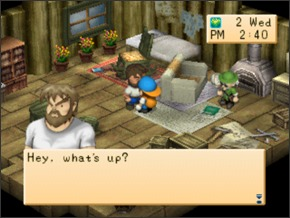
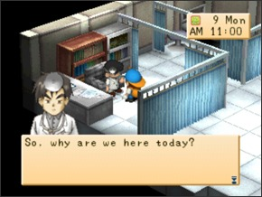
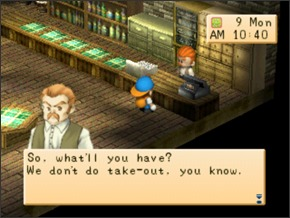
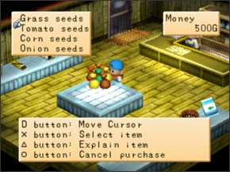

| LOJAS |
|---|
| Pular para a seção: Loja do Gotz, O Hospital, A Hospedaria(INN), Loja do Kai(Kai's Shop), Fazenda Poultry(Poultry Farm), Loja de Saibara(Saibara's Shop), O Supermercado(Supermarket), Loja do Won(Won's Shop) e Rancho Yodel(Yodel Ranch). Em Harvest Moon: Back to Nature há muitas lojas diferentes onde você pode comprar animais, sementes e vários outros itens. Você também pode aumentar as construções de sua fazenda e fazer novas ferramentas. |
| VINÍCOLA AJA(AJA WINERY) | |||
|---|---|---|---|
.jpeg) |
|||
|
Horarios: 9:00am a 12:00pm Tudo que você pode comprar aqui é vinho(Wine) e suco de uva(Grape Juice). Ambos os itens não tem muito uso neste jogo exceto para presentes. |
||
| Item | Custo | Descrição |
|---|---|---|
| Suco de uva(Grape juice) | 200G | Beba ou dê de presente |
| Vinho(Wine) | 300G | Beba ou dê de presente |
| GOTZ CONSTRUTORA(GOTZ's SHOP) | |||
|---|---|---|---|
|  | |||
Horarios: 11:00am a 5:00pm Gotz venderá madeira serrada e se você pagar a ele e ter bastante madeira ele aumentará as várias construções de sua fazenda. |
|||
| Item | Custo | Madeira serrada necessária(Lumber Required) | Descrição |
|---|---|---|---|
| Madeira serrada(Lumber) | 50G | - | Você pode comprar madeira serrada se você não quiser coletar você mesmo |
| Ampliação do galinheiro(Hen House Extension) | 5.000G | 420 | Permite você ter o dobro de galinhas no seu galinheiro |
| Ampliação da primeira casa(First House Extension) | 4.700G | 370 | Adciona uma estante e uma cozinha com uma geladeira no qual você pode cozinhar |
| Ampliação do celeiro(Barn Extension) | 6.800G | 500 | Permite você ter o dobro de vacas e ovelhas no seu celeiro |
| Ampliação da segunda casa(Second House Extension) | 10.000G | 750 | Adciona um quarto, esta extensçao é necessária antes de você se casar |
| Estufa(Hothouse) | 30.000G | 580 | Permite que você plante qualquer semente em qualquer estação |
| A CLINICA(THE HOSPITAL) | |||
|---|---|---|---|
|  | |||
Horarios: 9:00am to 4:00pm Doutor Tim dirige o hospital em Harvest Moon: Back to Nature e é ajudado por Elli. Você pode comprar medicamento e fazer um checkup aqui. |
|||
| Item | Custo | Descrição |
|---|---|---|
| Checkup | 10G | O doutor contará a você se tiver alguma fatiga |
| Bodigizer | 500G | Recupera 50 de stamina |
| Turbojolt | 1.000G | Recupera 20 de fatiga |
| Bodigizer XL* | 1.000G | Recupera 100 de stamina |
| Turbojolt XL* | 2.000G | Remove 50 de fatiga |
*O bodigizer Xl se torna disponível neste jogo depois de você entregar 51 erva azul(Blue grass) e o turbojolt XL se torna disponível depois de você entregar 51 erva verde(Gree grass). |
| A HOSPEDARIA(THE INN) | |||
|---|---|---|---|
|  | |||
Horarios: 8:00am to 9:00pm Doug opera um restaurante e um bar onde você pode comprar e conversar com outros aldeãos a noite. Ele tem um menu durante o dia e um diferente durante a noite. |
|||
| O MENU DURANTE O DIA | ||
|---|---|---|
| Item | Custo | Descrição |
| Refeição(Set Meal) | 500G | Recupera 50 stamina e remove 10 de fatiga |
| Salada(Salad) | 300G | Recupere 10 de stamina e remove 20 de fatiga |
| Torta de Maçã(Apple Pie) | 300G | Recupera 30 de stamina e remove 1 fatiga |
| Bolo de queijo(Cheesecake) | 250G | Recupera 20 de stamina e remove 1 de fatiga |
| Biscoito(Cookie) | 200G | Recupera 10 de stamina e remove 1 fatiga |
| Água | 0G | Recupera 1 stamina |
| O MENU DURANTE A NOITE | ||
| Item | Custo | Descrição |
| Licor de uva(Grape liquor) | 500G | Remove 20 de fatiga |
| Suco de abacaxi(Pineapple juice) | 300G | Remove 15 de fatiga |
| Leite(Milk) | 200G | Remove 10 de fatiga |
| Água(Water) | 0G | Recupera 1 stamina |
| LOJA DO KAI(KAI's SHOP) | |||
|---|---|---|---|
.jpeg) |
|||
|
Horarios: 10:00pm to 5:00pm Durante o verão neste jogo você pode achar Kai na praia e ele venderá alguma comida pra você. Eu realmente não vejo muito sentido nesta lojinha dele. |
||
| Item | Custo | Descrição |
|---|---|---|
| Cone de neve(Snowcone) | 300G | Remove 10 de fatiga |
| Milho assado(Roasted Corn) | 250G | Recupera 10 de stamina e remove 1 fatiga |
| Pratos de massa(Pasta) | 300G | Recupera 20 de stamina e remove 1 fatiga |
| Pizza | 200G | Recupera 15 de stamina e remove 1 fatiga |
| Água(Water) | 0G | Recupera 1 stamina |
| FAZENDA POULTRY(POULTRY FARM) | |||
|---|---|---|---|
.jpeg) |
|||
|
Horarios: 12:00pm a 4:00pm Na fazenda poultry(Poultry farm) você pode comprar e vender galinhas como também outros cuidados relacionados. Por que Lillia é doente o estabelecimento só é aberto por uma pequena parte do dia. Se você vender uma galinha, a uma quantidade de dinheiro que você receberá depende do nível de coração dela |
||
| Item | Custo | Descrição |
|---|---|---|
| Ração de galinha(Chicken feed) | 10G | Alimenta suas galinhas |
| Galinha(Chicken) | 1.500G | Você terá que comprar ao menos uma, assim você pode chocar os ovos que ela bota |
| Remedio para Animal(Animal medicine) | 1.000G | Cura qualquer animal doente |
| LOJA DO SAIBARA(SAIBARA's SHOP) | |||
|---|---|---|---|
.jpeg) |
|||
|
Horarios: 10:00pm a 4:00pm (Uma vez que vocês se tornam bons amigos sua loja abrirá as 9:00am) Saibara tem várias ferramentas para venda e se você trouxer um minério ele pode atualizar sua ferramenta existente também. Ele também fará máquinas produtoras e ele pode fazer joalherias para dar as garotas. |
||
| Item | Custo | Minério necessário | Descrição |
|---|---|---|---|
| Upgrade da ferramenta de cobre(Copper Tool Upgrade) | 1.000G | Minério de cobre(Copper Ore) | Atualiza sua ferramenta para uma ferramenta de cobre e leva 3 dias |
| Upgrade da ferramenta de prata(Silver Tool Upgrade) | 2.000G | Minério de prata(Silver Ore) | Atualiza sua ferramenta para uma ferramenta de prata e leva 3 dias |
| Upgrade da ferramenta de ouro(Gold Tool Upgrade) | 3.000G | Minério de ouro(Gold Ore) | Atualiza sua ferramenta para uma ferramenta de ouro e leva 3 dias |
| Upgrade da ferramenta de mystrile(Mystrile Tool Upgrade) | 5.000G | Minério de mystrile(Mystrile Ore) | Atualiza sua ferramenta para uma ferramenta de mystrile e leva 3 dias |
| Máquina de Maionese(Mayonnaise Maker) | 20.000G | Minério de adamantite(Admantite Ore) | Transforma seus ovos em maionese no qual vende por mais |
| Máquina de queijo(Cheese Maker) | 20.000G | Minério de adamantite(Admantite Ore) | Transforma seu leite em queijo no qual vende por mais |
| Máquina de novelo(Yarn Maker) | 20.000G | Minério de adamantite(Admantite Ore) | Transforma sua lã em novelo no qual vende por mais |
| Presente para garotas(Girl’s Present) | 1.000G | Minério de orichalc(Orichalc Ore) | Cria uma peça aleatória de joia para dar para a garota |
| Escova(Brush) | 800G | - | Use-a para escovar seu cavalo, ovelha ou vaca |
| Tosquiadores(Clippers) | 1.800G | - | Use-a para cortar lã de suas ovelhas |
| Ordenhador(Milker) | 2.000G | - | Use-a para tirar leite de suas vacas |
| SUPERMERCADO(SUPERMARKET) | |||
|---|---|---|---|
|  | |||
Horarios: 9:00am to 5:00pm O supermercado em Harvest Moon: Back to Nature é onde você vai comprar sementes, produtos de cozinha e outros itens úteis. A seleção de semente mudará dependendo da estação que está mas uma vez que você tem um estufa eles venderão todas as sementes independentemente da estação. |
|||
| Outros Itens | |||||
|---|---|---|---|---|---|
| Item | Custo | Descrição | |||
| Curry em pó(Curry powder) | 50G | Use para cozinhar | |||
| Óleo(Oil) | 50G | Use para cozinhar | |||
| Flour | 50G | Use para cozinhar | |||
| Bolinho de arroz(Rice ball) | 100G | Use para cozinhar | |||
| Pão(Bread) | 100G | Use para cozinhar | |||
| Comida para peixe(Fish food) | 20G | Alimente o peixe que você joga na sua lagoa | |||
| Papel de embrulho(Wrapping Paper) | 100G | Use para embrulhar um item para dar como presente | |||
| Pena Azul(Blue Feather) | 1.000G | Use-a para propor em casamento. Só está disponível quando o coração da garota está rosa | |||
| Mochila média(Medium Rucksack) | 3.000G | Guarda 4 itens e 4 ferramentas | |||
| Mochila grande(Large Rucksack) | 5.000G | Guarda 8 itens e 8 ferramentas | |||
| Sementes(Seeds) | |||||
| Item | Preço | Estação | Descrição | ||
| Sementes de nabo(Turnip Seeds) | 120G | Primavera | Cresce nabos | ||
| Sementes de batata(Potato Seeds ) | 150G | Primavera | Cresce batatas | ||
| Sementes de pepino(Cucumber Seeds) | 200G | Primavera | Cresce pepinos | ||
| Sementes de morango(Strawberry Seeds) | 150G | Primavera | A semente se torna disponível depois de entregar 100 de cada plantação da primavera | ||
| Sementes de cebola(Onion seeds) | 150G | Verão | Cresce cebolas | ||
| Sementes de tomate(Tomato seeds) | 200G | Verão | Cresce Tomates | ||
| Sementes de milho(Corn Seeds) | 300G | Verão | Cresce milhos | ||
| Sementes de abobora(Pumpkin Seeds) | 500G | Verão | Se torna disponível depois de entregar 100 de cada plantação de verão | ||
| Sementes de cenoura(Carrot Seeds) | 300G | Outono | Cresce Cenouras | ||
| Sementes de berinjela(Eggplant Seeds) | 120G | Outono | Cresce berinjela | ||
| Sementes de batata doce(Sweet Potato Seeds) | 300G | Outono | Cresce batatas doces | ||
| Sementes de espinafre(Spinach Seeds) | 200G | Outono | Eles se tornam disponível depois de você entregar 100 de cada plantação de outono | ||
| Grama(Grass) | 500G | Todas as estações exceto inverno | Cresce grama no qual pode ser cortada para virarem forragem para animais | ||
| LOJA DO WON(WON's SHOP) | |||
|---|---|---|---|
.jpeg) |
|||
|
Horarios: 1:00pm as 4:00pm Você achará Won conversando na hospedaria(INN) durante a tarde e neste videogame ele venderá a você sementes raras. |
||
| Item | Preço | Estação | Descrição |
|---|---|---|---|
| Sementes de repolho(Cabbage Seeds) | 500G | Primavera | Cresce repolho |
| Sementes de amendoeiras(Moondrop Seeds) | 300G | Primavera | Estas flores se tornam disponíveis depois de um certo evento com Karen* |
| Sementes da flor da brincadeira(Toy Flower Seeds) | 500G | Primavera | Cresce flor da brincadeira |
| Sementes de abacaxi(Pineapple Seeds) | 1.000G | Verão | Cresce abacaxi |
| Sementes do gato rosa(Pink Cat Seeds) | 200G | Verão | Cresce abacaxi |
| Sementes de pimenta verde(Green pepper) | 150G | Outono | Cresce pimenta verde |
| Sementes vermelhas mágicas(Magic Red Seeds) | 600G | Outono | Cresce flores vermelhas mágicas |
| Sementes do copo de laranja(Orange Cup Seeds) | 1.000G | Apenas na estufa | Cresce flores do copo de laranja |
*Durante a primavera se você tem ao menos 15.000 de amizade com Karen ela virá e lhe dará algumas sementes de amendoeiras. Depois delas florescerem Won começará a vender as sementes. |
| RANCHO YODEL(YODEL RANCH) | |||
|---|---|---|---|
.jpeg) |
|||
|
Horarios: 9:00am a 3:00pm Rancho Yodel é onde você pode comprar vacas, ovelhas e itens relacionados a cuidar de animais em Harvest Moon: Back to Nature. Você pode também vender uma de suas vacas ou ovelhas e o preço depende do nível de coração do animal. |
||
| Item | Custo | Descrição |
|---|---|---|
| Forragem(Fodder) | 20G | Você pode comprar forragem para alimentar seus animais se você não quiser cortar grama |
| Poção milagrosa da vaca(C.M. Potion) | 3.000G | Faz uma vaca adulta ficar grávida |
| Poção milagrosa da ovelha(S.M. Potion) | 3.000G | Faz uma ovelha adulta ficar grávida |
| Vaca(Cow) | 6.000G | Você pode comprar uma vaca adulta |
| Ovelha(Sheep) | 4.000G | Você pode comprar uma ovelha adulta |
| Sino(Bell) | 500G | Chame seus animais até você |
| Remedio para animal(Animal medicine) | 1.000G | Cura qualquer animal doente |
 Olá! Bem-Vindo! Olá! Bem-Vindo! |